The Problem: The uncertainty, anxiety, and time that comes with parking
It is generally understood that parking is a hassle. Being surrounded by college kids who require cars for daily life at school has made us well aware of all types of hardships people experience when finding parking. Issues that lead to being late to class, overpaying for spots, getting tickets, and overall stress and anxiety.
The Solution: SPOT

An app that assists the user with every step of the parking process, providing all possible information to park in the best spot for their needs.
Background: Struggles with the current parking process
According to a research study from leading transportation analytics company INRIX, Americans spend an average of 17 hours per year searching for parking. In New York City, the average is 107 hours per year.
The report, which is from 2017, also states that drivers often overpay for parking as well - by an average of $97 annually in the U.S. - adding up to over $20 billion per year for all Americans. This overpaying is usually a result of resorting to expensive garages and parking meters to avoid the risk getting a parking ticket, because the cheaper options, like curbside parking, can be a gray area.
Wasting time looking for parking, the uncertainty of the legality of spots, and the possibility of overpaying has contributed to the stress that nearly two-thirds of drivers in cities across the U.S. feel while parking:
What if you found parallel parking downtown and don’t see any parking meters or instructions? Did you really get free parking, or will you come back to your car with a parking ticket?
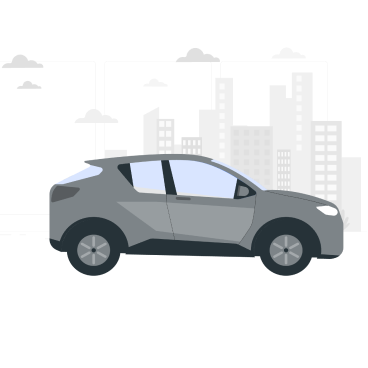
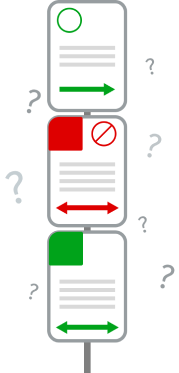
What about curbside in the city, but the road is lined with parking signs that have rules and regulations you can’t piece together?
Our goal is to eliminate all of these gray areas in the parking process, and ensure users have all of the information they need to clearly see and understand all of the parking options around them - something no app has fully accomplished.
Giving the user all of the information they need to make a quick decision about their parking spot would minimize stress and uncertainty, shrink the amount of time spent searching for spots, and prevent users from unnecessary overpaying - all of which is extremely important for the wellbeing of drivers.
This would allow people to always be on time for their events, appointments, and gatherings. It would even encourage people to get out more - do more shopping, meeting friends, and other leisure activities without the dread of parking somewhere first. It would also save people money, and wherever they park, they would have peace of mind that they were able to select the spot that offers the best value for their situation.
User Research
Research Goals
To start off, we wanted to research our users and find out what problems drivers most often experience when parking.
We wanted to gain insights into:
- Which aspects of the parking experience cause anxiety and confusion
- What motivates people to park in certain areas and in certain parking spots
- What people first look for when trying to find parking
- Exactly when and where people would want to use this app
- Which issues are prominent enough to focus on for our app
We created a survey and sent it out to large, diverse groups of individuals. This group included commuters who drove to college every day, working professionals, and those who like to go out and attend events in other cities.
The 70+ responses from our survey strongly supported our initial perception of people’s experience with parking.
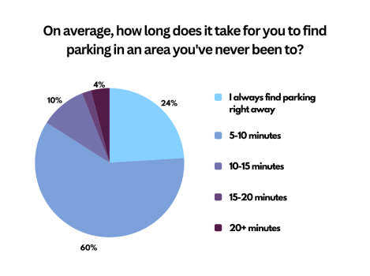
Less than 25% of people say they find parking right away in a new place. 60% say it takes 5-10 minutes.
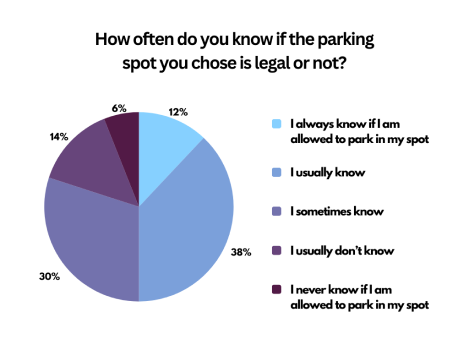
Only 12% of respondents said that they always know if their spot is legal. Half of respondents know if their parking is legal only some of the time or less.
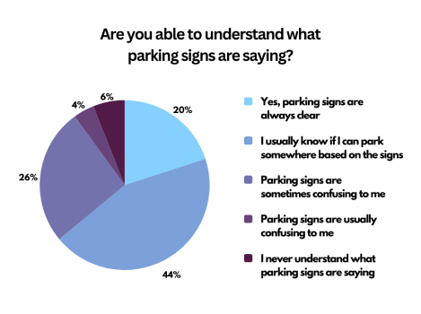
80% of the respondents have experienced confusion when trying to comprehend signs with parking information.
The survey alone has given us clear insights about the general population’s experience with parking, as well as how common, and when, struggles and confusion occur. With this information, we were able to administer interviews with thought-provoking questions, and have conversations that further satisfied our research goals.
Analyzing Data: Translating research insights into features
Taking insights from our survey, as well as interviews and what participants shared, we found the biggest hardships people had with parking could mostly fall into 3 themes: time, information about legality of spaces, and money.
We organized lots of thoughts and ideas discussed by people we interviewed into these three themes - many of these ideas/insights were shared by multiple respondents. Grouping these similar insights together allowed us to focus on and pinpoint important features that would solve the main problems users have with the current parking process.
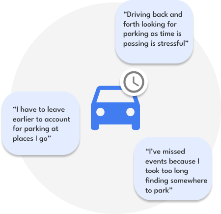
Looking for parking takes too much time - ensure UI allows for quick and easy browsing/discovery of all parking options nearby (like an interactive map), and
ability to check in advance
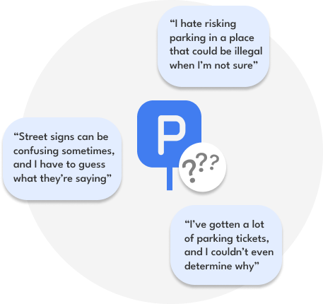
It can be difficult to get clear information about parking rules - have a section where all important information about when parking is legal is shown
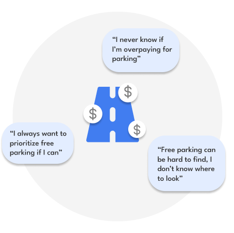
There is no easy way to compare the cost of different parking options - clearly show the cost of parking in different areas and make free parking stand out in the app
Beginning the Design
After outlining the most important features of our app, we started brainstorming designs. First, with a crazy eights exercise which helped showcase everyones' thought process, and quickly get everyone’s main ideas down. We were also able to discuss variations of the structure and features of the app.
Then, we compiled common themes from our individual drawings to one main design which we collaborated on as a group:
The team and our messy (but super important) sketches.
The designs in most of our individual sketches revolved around an interactive map, and most app functions and features could be found on this single map screen. We went with this approach for our final design. People would be using this app while driving or in their car, and an app with features buried behind menus and different screens would be very difficult to navigate without users’ full attention.
Therefore, all places to park would be displayed with icons on the map screen. One tap on any of them would open up a menu at the bottom, containing all information about this spot. We wanted the menu to be in-depth to ensure that users would have all the information necessary for parking with 100% confidence. However, it also needed to be glanceable for use when in the car.
We then translated these ideas and more into cleaner wireframes. This allowed us to get down the layout of the app, and a general location of the features we wanted to focus on.
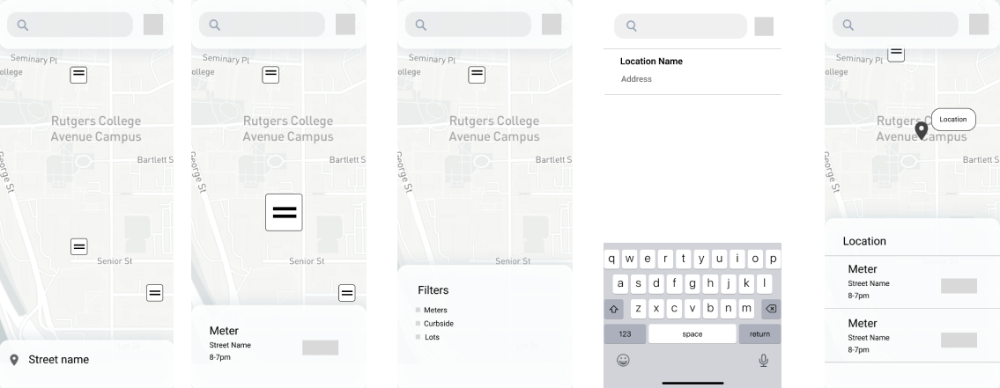
Final Design
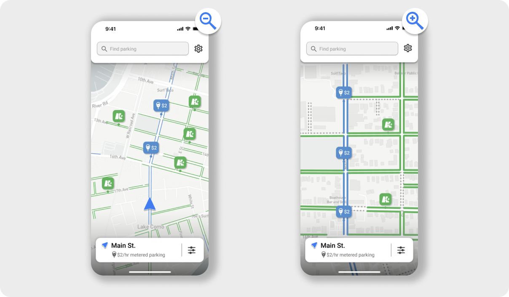
Explore all parking nearby
Free curbside parking is shown in green, and paid parking is shown in blue to easily differentiate them at a glance. Curbsides where parking isn’t legal or available is shown by gray dotted lines, so even a lack of parking is clear to users. All of these design choices were made to ensure that everything seen on the road in real life is explained, leaving no room for doubt or overthinking on the user’s part.
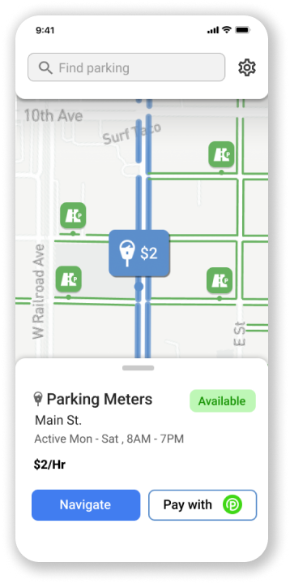
Learn about parking spots
Tapping on an icon or highlighted curbside for parking opens up the spot details, where the user can see the type of parking, how much it costs, and what the active hours are so the user knows how long they’ll have to pay. In one glance, the user is able to see if a spot works for their parking needs.
The user can navigate to the spot with their default maps app, and pay for the meters with Parkmobile.
Show only spots that are useful
For the filters screen, we wanted to ensure all aspects of a parking spot were covered, to accommodate for any parking situation. Filtering out length of parking and parking cost, for example, can help users narrow down the exact spots that suits their needs.
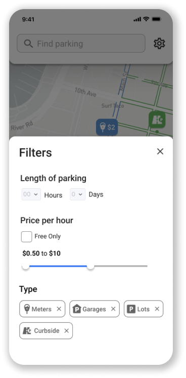
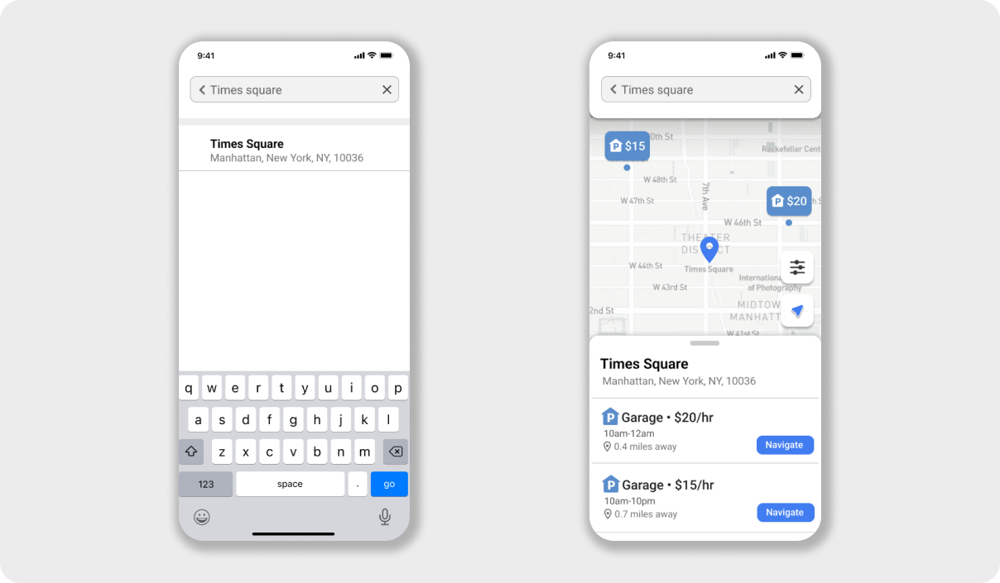
Find parking ahead of time
The search bar allows the user to search anywhere they want, to see what parking looks like there. They can see how far the best parking is from their desired location, then choose to navigate there to eliminate any time looking for parking when arriving.
Takeaways
What was new to me?
Working on a team every week on the same project on a schedule was new to me in this context. From brainstorming ideas to figuring out which problems to solve together really helped me be cooperative with teammates under pressure and ensure that everyone is able to have equal contribution.
What was the most challenging?
Figuring out which problems to focus on, as well as ensuring the app clears up all confusion on parking was difficult. There are so many aspects in the process of parking somewhere that can be hard for users, and we wanted to ensure the app was able to solve them in a clear, easy to understand way. Coming up with a design that not only presented the large amount of information for parking, but was still simple, clean, and easy to use, was a challenge, but I am happy with the result.
How does my solution help users?
Spot shows all parking around the user's location on a map. It is unique as it shows every possible place where users can park, as opposed to similar apps, which don't cover all kinds of parking. Overall, this saves users time, leading to less late or even missed appointments and events. It saves users money, ensuring that they can find the best value, and free, parking spots. It also can relieve the stress that users experience while parking, which can be encouragement to go out more often, when they would usually be dissuaded by parking.
How would I measure success?
If this app were to launch, success would mean peace of mind for users after parking their car - they'd be sure that their spot is legal. It would mean no more stress because of wasting time, aimlessly circling blocks. This could mean roads that are safer to drive on as cars aren’t blocking the road because they parked where they shouldn’t. Parking would no longer be an excuse for being late to or missing opportunities.